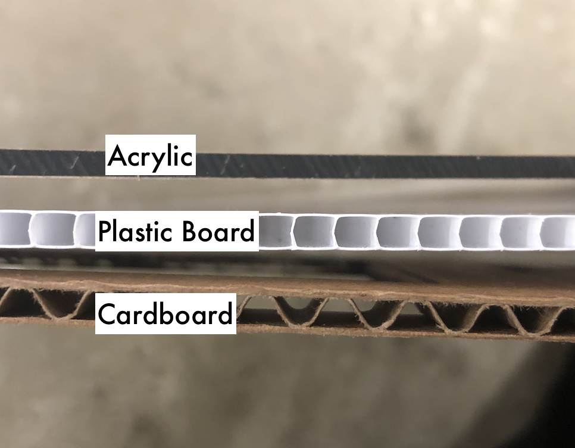
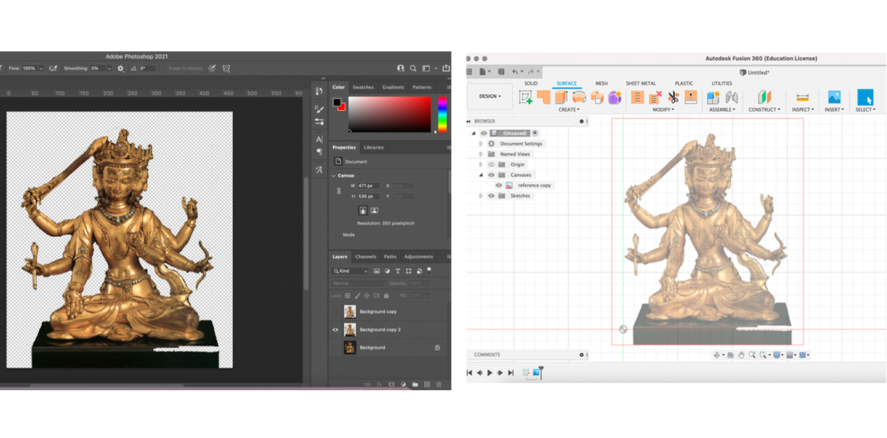

Motorized Rocking Horse

Inspiration
Stock & Gearbox

We were provided a 3.3V DC motor as the actuation device for our sculpture. I needed to fabricate some kind of gearbox to transfer the motion of the shaft of the motor to any sculpture. So my next step was to choose between the available stock materials shown above.
I realized after an inspection of the cardboard and plastic sheets that its cross-section is mostly hollow so that if I cut gear teeth into it, its would likely not bear any weight.
I gave the shaft of the motor a quick 'pinch-test' to try and estimate the total torque it might be able to provide. I decided that wood stock (not pictured) might be too heavy given the size of the motor.
With my stock in mind, I obtained the design of a gear box that would provide the 'up-and-down' motion that I wanted for my sculpture.
I downloaded its .pdf file, converted it to a .dtx to import to Fusion 360. Like last week, I used an overlay reference technique to draw the shape of a horse in the Sketch tool.
Soldering

I began by soldering two lead wires onto the motor. Hot glue was layered onto the newly soldered joint to ensure stability.